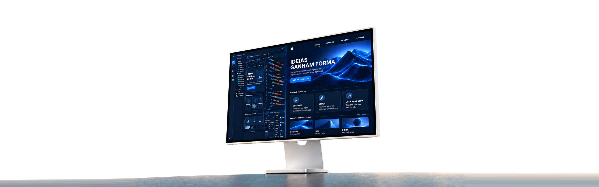
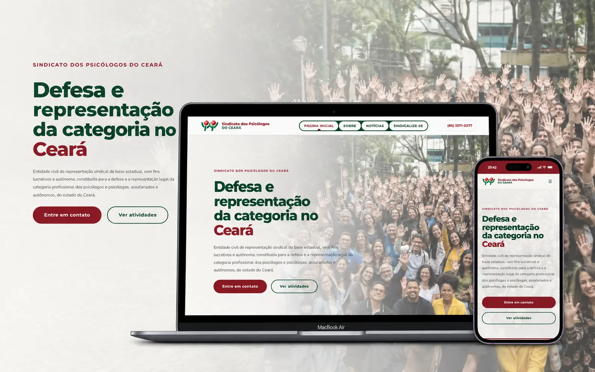
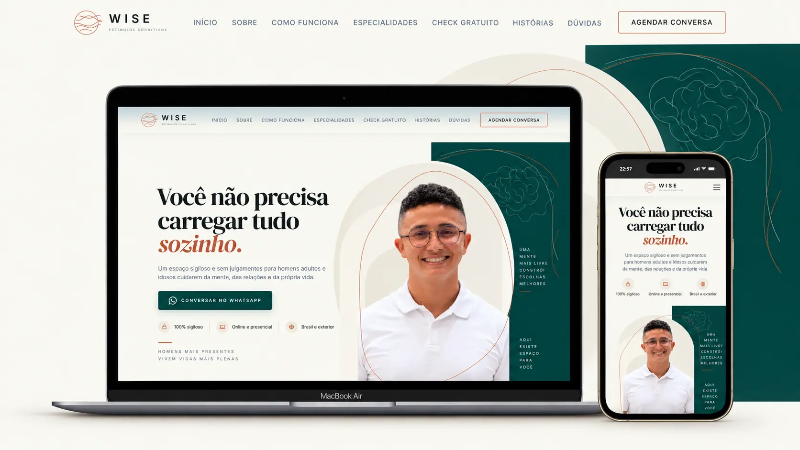

De um lado, sites no ar feitos sob medida para clientes. Do outro, templates prontos para adaptar à sua marca e publicar em poucos dias. Tudo desenhado e codado do zero.


Quer o seu projeto aqui, do zero ou a partir de um template?
Pedir um orçamentoDo desktop ao celular, crio interfaces sob medida, rápidas e acessíveis, desenhadas e codadas do começo ao fim.